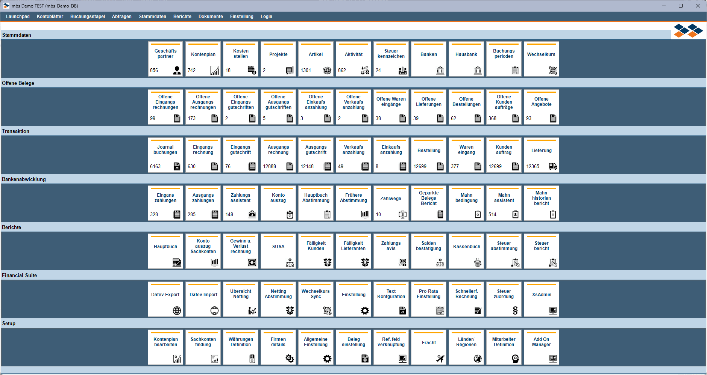
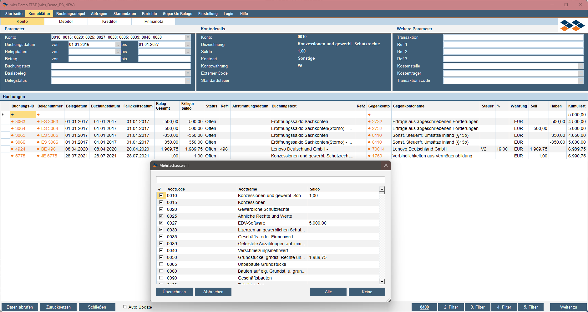
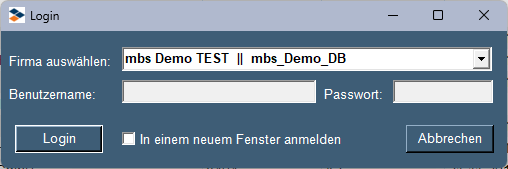

Cockpit
Überblick
Das Versino Cockpit ist das zentrale Dashboard der Financial Suite und bietet eine umfassende Arbeitsumgebung für die Verwaltung, Analyse und Erfassung von Buchungen. Es läuft als eigenständiges Fenster parallel zu SAP Business One und fungiert als Startpunkt und Kontrollzentrum für viele Finanzprozesse.
Zugang: Das Cockpit erreichen Sie über Versino Financial Suite > Financial Cockpit. Es übernimmt automatisch Ihre SAP B1-Session und Benutzerrechte.
Wichtige Trennung: "Buchungsstack" vs. "Buchungsstapel"
Das Cockpit hat zwei ähnlich klingende, aber sehr unterschiedliche Bereiche:
- Kontoseiten > Buchungsstack: NUR Anzeige & Analyse vorhandener Buchungen (dynamische Primanota).
- Buchungsstapel-Reiter: Tool zur ERSTELLUNG neuer Journalbuchungen (BookingStackView).
Hauptfunktionen
Startseite (Launchpad)
Die Startseite ist Ihr persönliches Dashboard mit konfigurierbaren Kacheln für den Schnellzugriff auf die wichtigsten Bereiche von SAP Business One.

Kontoblätter (Bestehende Buchungen analysieren)
Unter dem Reiter "Kontoblätter" finden Sie eine leistungsstarke Ansicht von Journalbuchungen mit Bezug auf Konten/Debitoren/Kreditoren/Primanota (DATEV). Dies ist eine reine Analyse- und Leseansicht, die es Ihnen erlaubt, bestehende Buchungen schnell zu filtern, zu sortieren und Details per Doppelklick anzuzeigen. Hier können keine neuen Buchungen erstellt werden.

Buchungsstack mit dynamischer Primanota" class="module-image">Buchungsstapel (neue Journalbuchungen schnell erfassen)
Unter dem Reiter "Buchungsstapel" finden Sie ein separates Werkzeug, das speziell für die schnelle Erstellung von neuen Journalbuchungen konzipiert ist. Es bietet eine Eingabe mit intelligenten Automatismen:
- Automatische Kontotyp-Erkennung (Aufwand, Ertrag etc.)
- Automatische Steuerzuordnung basierend auf den Kontostammdaten
- Automatische Brutto-/Nettoberechnung
- Enter-Taste-Handling für schnelle Eingabe
- Auto-Sperrung von Feldern bei ausgefüllten Daten
Pflichtfelder: Konto, Buchungsdatum, Belegart, Gegenkonto, Buchungstext, Betrag.
Optionale Felder: Referenz 1–3, Projekt sowie dynamische Kostenstellenfelder basierend auf SAP B1 Dimensionen.

Dokumente (Anlage von geparkten Belegen)
Unter dem Reiter "Dokumente" finden Sie ein separates Werkzeug, das speziell für die Anlage von Belegen aus geparkten Belegen konzipiert ist.
- Nach dem Markieren der Zeilen können Sie über den Button Weiter zu die geparkten Belege hinzufügen oder entfernen.
- Nach Anlage der Belege erhalten Sie eine Statusmeldung mit allen erfolgreichen bzw. fehlgeschlagenen Belegen.
- Anschließend werden Sie automatisch auf den Tab Dokumente umgeleitet und es werden alle angelegten Dokumente angezeigt.
Login (Multicompany-Funktion)
Unter dem Reiter "Login" ist es Ihnen möglich, sich in einen weiteren Mandanten anzumelden — entweder über das aktuelle Fenster oder über ein neues Fenster.

Vordefinierte Abfragen
Unter dem Reiter "Abfragen" stehen folgende vordefinierte Auswertungen zur Verfügung:
- Steuerbefreite GP (BPFreed) — Übersicht aller steuerbefreiten Geschäftspartner
- Steuerpflichtige GP (BPMandatory) — Übersicht aller steuerpflichtigen GP
- Mahnsperre Kunden (DunLock) — Kunden mit aktivierter Mahnsperre
- Zahlungssperre Lieferanten (PayLock) — Lieferanten mit aktivierter Zahlungssperre
- Eingangsrechnungskontrolle (APInvoiceControle) — Kontrolle und Analyse von Eingangsrechnungen
- Auswertung nach Konten (EvaluationByAccount) — Detaillierte Kontenauswertungen mit Länderaufschlüsselung
- Konten ohne Standardsteuer (AccountVsTax) — Identifikation steuerlicher Unstimmigkeiten

Berichte im Cockpit
Unter dem Reiter "Berichte" sind die Cockpit-internen Reports verfügbar:
- BWA — Betriebswirtschaftliche Auswertung mit HANA- und SQL-Server-Unterstützung
- SUSA — Klassische Summen- und Saldenauswertung
- OPK — Offene Posten Kunden mit Fälligkeitsanalysen
Daneben sind im Reiter "Stammdaten" umfassende Geschäftspartner-Übersichten verfügbar mit direkter Bearbeitungsmöglichkeit über das Kontextmenü (Rechtsklick).
Integration mit anderen VPS-Modulen
VPS Hauptmodul & Konfigurationen
Über die Startseite-Kacheln im FS-Bereich gelangen Sie direkt zu allen Konfigurationen der Financial Suite — DATEV Export/Import, Wechselkurse, Pro-Rata Einstellungen, JE Text Konfiguration, XsAdmin.
VPS Reporting (Berichte)
Die Cockpit-Berichte BWA, SUSA und OPK greifen auf die zentralen Reporting-Komponenten zu und nutzen automatisch die optimierten Versionen für SQL Server bzw. HANA.
SAP B1 Multi-Mandanten
Das Cockpit erlaubt mehrere parallele Sessions in unterschiedlichen Mandanten. Tipp: Im Cockpit unterliegen Sie keinen Lizenz-Limitierungen — Sie können mit demselben Benutzer mehr als 2 Sitzungen gleichzeitig starten.
Anwendung
Cockpit starten
- Navigieren Sie zu Versino Financial Suite > Financial Cockpit.
- Das Cockpit öffnet sich als eigenständiges Windows-Fenster.
- Die Startseite mit den Kachelbereichen wird automatisch angezeigt.
Buchungsstapel-Tool für Journalbuchungen verwenden
- Wechseln Sie zum Buchungsstapel-Reiter.
- Füllen Sie die Pflichtfelder aus: Konto, Buchungsdatum, Belegart, Gegenkonto, Buchungstext, Betrag.
- Optional: Ergänzen Sie Referenzfelder und Projekt.
- Drücken Sie Enter oder klicken Sie "Daten abrufen" zum Hinzufügen ins Grid.
- Wiederholen Sie für weitere Buchungszeilen.
- Klicken Sie "Funktionen > Journalbuchung erstellen". Die Buchung wird automatisch in SAP Business One geöffnet.
Dynamische Primanota verwenden
- Wechseln Sie zum Kontoseiten-Reiter.
- Wählen Sie "Buchungsstack" für die dynamische Primanota-Ansicht.
- Alle Journalbuchungen werden in einer übersichtlichen Tabelle angezeigt.
- Nutzen Sie Spalten-Sortierung, Filter und Doppelklick auf Zeilen für Detailansichten.
Multi-Mandanten-Anmeldung
- Wechseln Sie zum Anmeldung-Reiter.
- Wählen Sie die gewünschte Firma aus der Dropdown-Liste.
- Geben Sie Benutzername und Passwort ein.
- Optional: Aktivieren Sie "In einem neuen Fenster anmelden".
- Klicken Sie "Anmeldung" für die Verbindung.
Tipps und Fehlerbehandlung
Tipps für die tägliche Arbeit
- Summierungs-Tipp: Markieren Sie in einer beliebigen Tabelle mehrere Zeilen mit Zahlenwerten. Die Summe dieser Werte wird automatisch beim Hovern auf dem Spaltenkopf angezeigt.
- Login-Tipp: Beim Ummelden bleiben Sie weiterhin in der aktuellen B1-Session angemeldet. Im Cockpit unterliegen Sie keinen Lizenz-Limitierungen — Sie können mit dem Benutzer mehr als 2 Sitzungen starten.
- Buchungsstack-Bereiche richtig nutzen: Verwenden Sie die dynamische Primanota (Kontoseiten) für Buchungsanalysen, das Buchungsstack-Tool für die Erstellung neuer Journalbuchungen.
- Personalisierung: Konfigurieren Sie die Startseite nach Ihren Arbeitsgewohnheiten und nutzen Sie die Kachel-Verwaltung für eine individuelle Oberfläche.
- Performance: Schließen Sie nicht verwendete Tabs für bessere Performance.
Häufige Probleme und Lösungen
Problem: Verwechslung der Buchungsstack-Bereiche.
Lösung: Beachten Sie den Unterschied — Kontoseiten zeigen vorhandene Buchungen, Buchungsstapel-Reiter erstellt neue Buchungen.
Problem: Buchungsstapel-Tool-Eingabe funktioniert nicht.
Lösung: Prüfen Sie alle Pflichtfelder (Konto, Buchungsdatum, Belegart, Gegenkonto, Buchungstext, Betrag) und validieren Sie die Kontostammdaten.
Problem: Dynamische Primanota zeigt keine Daten.
Lösung: Prüfen Sie die Datenbankverbindung, validieren Sie die Benutzerrechte für Journalbuchungen und kontrollieren Sie die Filter-Einstellungen.
Problem: Cockpit startet nicht.
Lösung: Starten Sie SAP Business One als Administrator neu und prüfen Sie die VPS Financial Suite Installation.